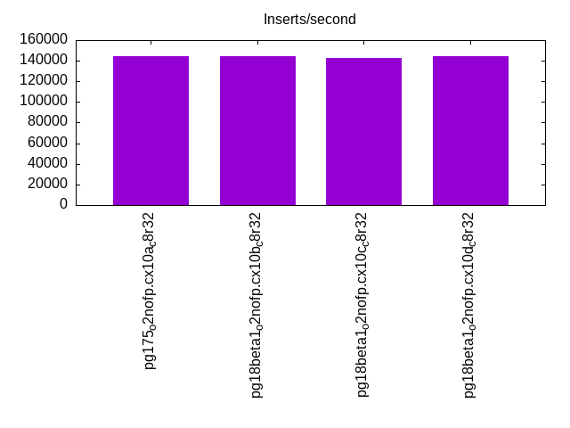
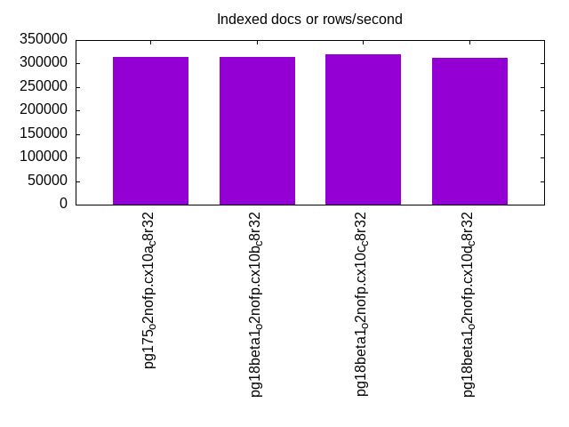
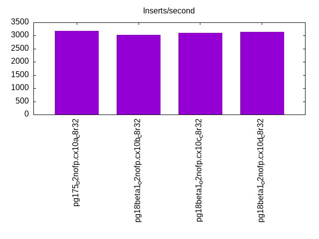
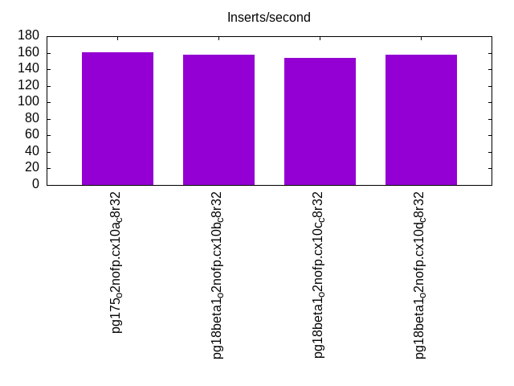
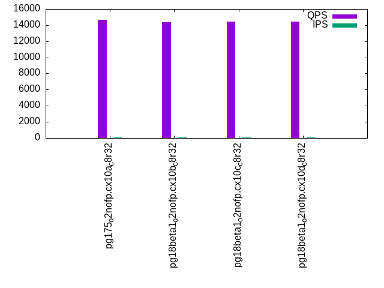
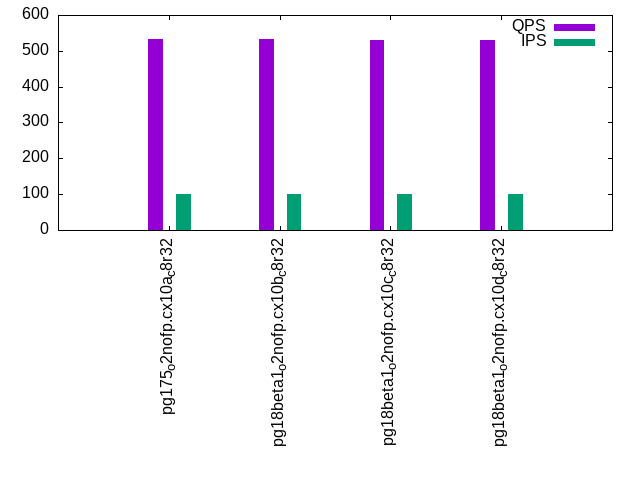
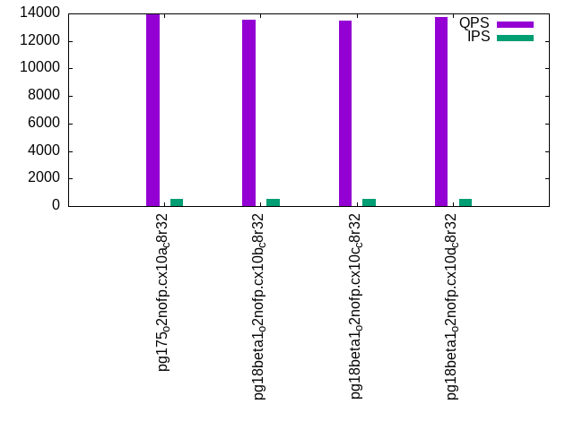
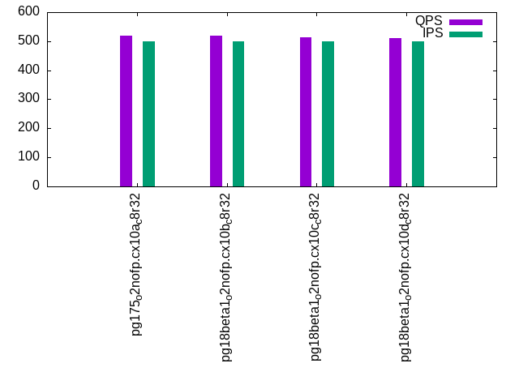
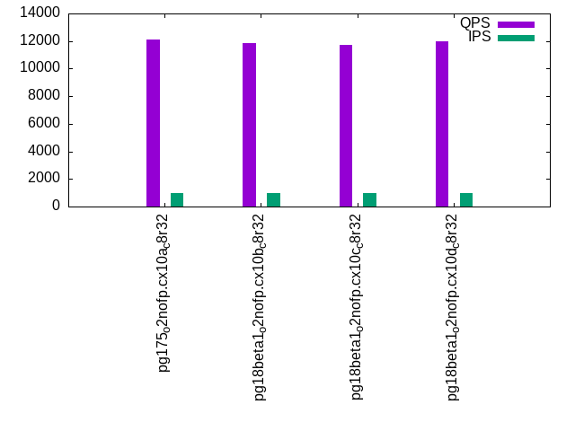
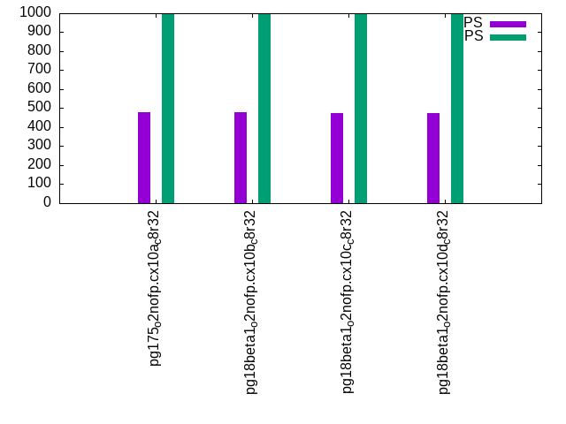

This is a report for the insert benchmark with 800M docs and 1 client(s). It is generated by scripts (bash, awk, sed) and Tufte might not be impressed. An overview of the insert benchmark is here and a short update is here. Below, by DBMS, I mean DBMS+version.config. An example is my8020.c10b40 where my means MySQL, 8020 is version 8.0.20 and c10b40 is the name for the configuration file.
The test server has 8 AMD cores, 32G RAM and an NVMe SSD. It is described here as the PN53. The benchmark was run with 1 client and there were 1 or 3 connections per client (1 for queries or inserts without rate limits, 1+1 for rate limited inserts+deletes). It uses 1 table. It loads 800M rows per table without secondary indexes, creates 3 secondary indexes per table, then inserts 4m+1m rows per table with a delete per insert to avoid growing the table. It then does 6 read+write tests for 1800s each that do queries as fast as possible with 100,100,500,500,1000,1000 inserts/s and the same for deletes/s per client concurrent with the queries. The database is larger than memory. Clients and the DBMS share one server. The per-database configs are in the per-database subdirectories here.
The tested DBMS are:
The numbers are inserts/s for l.i0, l.i1 and l.i2, indexed docs (or rows) /s for l.x and queries/s for qr100, qp100 thru qr1000, qp1000" The values are the average rate over the entire test for inserts (IPS) and queries (QPS). The range of values for IPS and QPS is split into 3 parts: bottom 25%, middle 50%, top 25%. Values in the bottom 25% have a red background, values in the top 25% have a green background and values in the middle have no color. A gray background is used for values that can be ignored because the DBMS did not sustain the target insert rate. Red backgrounds are not used when the minimum value is within 80% of the max value.
| dbms | l.i0 | l.x | l.i1 | l.i2 | qr100 | qp100 | qr500 | qp500 | qr1000 | qp1000 |
|---|---|---|---|---|---|---|---|---|---|---|
| pg175_o2nofp.cx10a_c8r32 | 144613 | 313357 | 3170 | 161 | 14660 | 532 | 13906 | 518 | 12081 | 481 |
| pg18beta1_o2nofp.cx10b_c8r32 | 144404 | 314465 | 3021 | 158 | 14343 | 534 | 13556 | 518 | 11871 | 478 |
| pg18beta1_o2nofp.cx10c_c8r32 | 142857 | 320384 | 3108 | 154 | 14445 | 529 | 13466 | 513 | 11699 | 473 |
| pg18beta1_o2nofp.cx10d_c8r32 | 144092 | 312867 | 3142 | 158 | 14446 | 530 | 13708 | 512 | 11982 | 473 |
This table has relative throughput, throughput for the DBMS relative to the DBMS in the first line, using the absolute throughput from the previous table. Values less than 0.95 have a yellow background. Values greater than 1.05 have a blue background.
| dbms | l.i0 | l.x | l.i1 | l.i2 | qr100 | qp100 | qr500 | qp500 | qr1000 | qp1000 |
|---|---|---|---|---|---|---|---|---|---|---|
| pg175_o2nofp.cx10a_c8r32 | 1.00 | 1.00 | 1.00 | 1.00 | 1.00 | 1.00 | 1.00 | 1.00 | 1.00 | 1.00 |
| pg18beta1_o2nofp.cx10b_c8r32 | 1.00 | 1.00 | 0.95 | 0.98 | 0.98 | 1.00 | 0.97 | 1.00 | 0.98 | 0.99 |
| pg18beta1_o2nofp.cx10c_c8r32 | 0.99 | 1.02 | 0.98 | 0.96 | 0.99 | 0.99 | 0.97 | 0.99 | 0.97 | 0.98 |
| pg18beta1_o2nofp.cx10d_c8r32 | 1.00 | 1.00 | 0.99 | 0.98 | 0.99 | 1.00 | 0.99 | 0.99 | 0.99 | 0.98 |
This lists the average rate of inserts/s for the tests that do inserts concurrent with queries. For such tests the query rate is listed in the table above. The read+write tests are setup so that the insert rate should match the target rate every second. Cells that are not at least 95% of the target have a red background to indicate a failure to satisfy the target.
| dbms | qr100.L1 | qp100.L2 | qr500.L3 | qp500.L4 | qr1000.L5 | qp1000.L6 |
|---|---|---|---|---|---|---|
| pg175_o2nofp.cx10a_c8r32 | 100 | 100 | 500 | 500 | 999 | 999 |
| pg18beta1_o2nofp.cx10b_c8r32 | 100 | 100 | 500 | 500 | 999 | 999 |
| pg18beta1_o2nofp.cx10c_c8r32 | 100 | 100 | 500 | 500 | 999 | 999 |
| pg18beta1_o2nofp.cx10d_c8r32 | 100 | 100 | 500 | 500 | 999 | 999 |
| target | 100 | 100 | 500 | 500 | 1000 | 1000 |
l.i0: load without secondary indexes. Graphs for performance per 1-second interval are here.
Average throughput:
Insert response time histogram: each cell has the percentage of responses that take <= the time in the header and max is the max response time in seconds. For the max column values in the top 25% of the range have a red background and in the bottom 25% of the range have a green background. The red background is not used when the min value is within 80% of the max value.
| dbms | 256us | 1ms | 4ms | 16ms | 64ms | 256ms | 1s | 4s | 16s | gt | max |
|---|---|---|---|---|---|---|---|---|---|---|---|
| pg175_o2nofp.cx10a_c8r32 | 99.974 | 0.021 | 0.003 | 0.001 | nonzero | 0.072 | |||||
| pg18beta1_o2nofp.cx10b_c8r32 | 99.972 | 0.023 | 0.004 | 0.001 | 0.040 | ||||||
| pg18beta1_o2nofp.cx10c_c8r32 | 99.837 | 0.155 | 0.006 | 0.002 | nonzero | 0.069 | |||||
| pg18beta1_o2nofp.cx10d_c8r32 | 99.968 | 0.026 | 0.005 | 0.001 | 0.047 |
Performance metrics for the DBMS listed above. Some are normalized by throughput, others are not. Legend for results is here.
ips qps rps rmbps wps wmbps rpq rkbpq wpi wkbpi csps cpups cspq cpupq dbgb1 dbgb2 rss maxop p50 p99 tag 144613 0 25 0.2 540.5 59.4 0.000 0.001 0.004 0.421 14417 20.5 0.100 11 76.5 116.6 18.2 0.072 145480 140883 pg175_o2nofp.cx10a_c8r32 144404 0 25 0.2 539.0 59.3 0.000 0.001 0.004 0.421 14394 20.4 0.100 11 76.5 116.6 18.4 0.040 145282 140780 pg18beta1_o2nofp.cx10b_c8r32 142857 0 24 0.2 532.2 58.5 0.000 0.001 0.004 0.419 14651 20.7 0.103 12 76.5 116.6 18.5 0.069 143081 132682 pg18beta1_o2nofp.cx10c_c8r32 144092 0 26 0.2 540.4 59.4 0.000 0.001 0.004 0.422 14461 20.5 0.100 11 76.5 116.6 18.9 0.047 144982 140681 pg18beta1_o2nofp.cx10d_c8r32
l.x: create secondary indexes.
Average throughput:
Performance metrics for the DBMS listed above. Some are normalized by throughput, others are not. Legend for results is here.
ips qps rps rmbps wps wmbps rpq rkbpq wpi wkbpi csps cpups cspq cpupq dbgb1 dbgb2 rss maxop p50 p99 tag 313357 0 849 105.5 998.0 116.9 0.003 0.345 0.003 0.382 474 12.9 0.002 3 153.6 193.7 23.4 0.004 NA NA pg175_o2nofp.cx10a_c8r32 314465 0 852 105.9 1001.6 117.1 0.003 0.345 0.003 0.381 449 13.0 0.001 3 153.6 193.7 23.4 0.005 NA NA pg18beta1_o2nofp.cx10b_c8r32 320384 0 868 107.8 1010.4 119.7 0.003 0.345 0.003 0.382 1270 13.4 0.004 3 153.6 193.7 23.4 0.003 NA NA pg18beta1_o2nofp.cx10c_c8r32 312867 0 848 105.3 996.8 116.8 0.003 0.345 0.003 0.382 999 13.4 0.003 3 153.6 193.7 23.4 0.003 NA NA pg18beta1_o2nofp.cx10d_c8r32
l.i1: continue load after secondary indexes created with 50 inserts per transaction. Graphs for performance per 1-second interval are here.
Average throughput:
Insert response time histogram: each cell has the percentage of responses that take <= the time in the header and max is the max response time in seconds. For the max column values in the top 25% of the range have a red background and in the bottom 25% of the range have a green background. The red background is not used when the min value is within 80% of the max value.
| dbms | 256us | 1ms | 4ms | 16ms | 64ms | 256ms | 1s | 4s | 16s | gt | max |
|---|---|---|---|---|---|---|---|---|---|---|---|
| pg175_o2nofp.cx10a_c8r32 | 98.449 | 1.551 | 0.058 | ||||||||
| pg18beta1_o2nofp.cx10b_c8r32 | 98.419 | 1.581 | 0.059 | ||||||||
| pg18beta1_o2nofp.cx10c_c8r32 | 98.323 | 1.678 | 0.054 | ||||||||
| pg18beta1_o2nofp.cx10d_c8r32 | 98.442 | 1.558 | 0.055 |
Delete response time histogram: each cell has the percentage of responses that take <= the time in the header and max is the max response time in seconds. For the max column values in the top 25% of the range have a red background and in the bottom 25% of the range have a green background. The red background is not used when the min value is within 80% of the max value.
| dbms | 256us | 1ms | 4ms | 16ms | 64ms | 256ms | 1s | 4s | 16s | gt | max |
|---|---|---|---|---|---|---|---|---|---|---|---|
| pg175_o2nofp.cx10a_c8r32 | 0.429 | 16.102 | 43.014 | 40.455 | 0.033 | ||||||
| pg18beta1_o2nofp.cx10b_c8r32 | 0.511 | 15.054 | 38.488 | 45.948 | 0.034 | ||||||
| pg18beta1_o2nofp.cx10c_c8r32 | 1.014 | 14.866 | 41.444 | 42.676 | 0.033 | ||||||
| pg18beta1_o2nofp.cx10d_c8r32 | 0.573 | 15.326 | 42.014 | 42.087 | 0.033 |
Performance metrics for the DBMS listed above. Some are normalized by throughput, others are not. Legend for results is here.
ips qps rps rmbps wps wmbps rpq rkbpq wpi wkbpi csps cpups cspq cpupq dbgb1 dbgb2 rss maxop p50 p99 tag 3170 0 4558 36.1 3791.7 64.9 1.438 11.659 1.196 20.968 10262 15.0 3.238 379 154.3 194.3 22.7 0.058 2650 1850 pg175_o2nofp.cx10a_c8r32 3021 0 4347 34.4 3622.3 62.0 1.439 11.667 1.199 21.008 9796 14.9 3.243 395 154.3 194.3 22.9 0.059 2600 1550 pg18beta1_o2nofp.cx10b_c8r32 3108 0 4469 35.4 3721.0 63.9 1.438 11.657 1.197 21.068 10063 15.0 3.238 386 154.3 194.3 23.0 0.054 2749 1750 pg18beta1_o2nofp.cx10c_c8r32 3142 0 4519 35.8 3742.2 63.9 1.438 11.654 1.191 20.827 10167 14.9 3.236 379 154.3 194.3 22.9 0.055 2600 1800 pg18beta1_o2nofp.cx10d_c8r32
l.i2: continue load after secondary indexes created with 5 inserts per transaction. Graphs for performance per 1-second interval are here.
Average throughput:
Insert response time histogram: each cell has the percentage of responses that take <= the time in the header and max is the max response time in seconds. For the max column values in the top 25% of the range have a red background and in the bottom 25% of the range have a green background. The red background is not used when the min value is within 80% of the max value.
| dbms | 256us | 1ms | 4ms | 16ms | 64ms | 256ms | 1s | 4s | 16s | gt | max |
|---|---|---|---|---|---|---|---|---|---|---|---|
| pg175_o2nofp.cx10a_c8r32 | 10.545 | 89.403 | 0.048 | 0.004 | 0.025 | ||||||
| pg18beta1_o2nofp.cx10b_c8r32 | 9.489 | 90.456 | 0.052 | 0.003 | 0.027 | ||||||
| pg18beta1_o2nofp.cx10c_c8r32 | 10.748 | 89.200 | 0.050 | 0.003 | 0.036 | ||||||
| pg18beta1_o2nofp.cx10d_c8r32 | 10.649 | 89.303 | 0.047 | 0.002 | 0.022 |
Delete response time histogram: each cell has the percentage of responses that take <= the time in the header and max is the max response time in seconds. For the max column values in the top 25% of the range have a red background and in the bottom 25% of the range have a green background. The red background is not used when the min value is within 80% of the max value.
| dbms | 256us | 1ms | 4ms | 16ms | 64ms | 256ms | 1s | 4s | 16s | gt | max |
|---|---|---|---|---|---|---|---|---|---|---|---|
| pg175_o2nofp.cx10a_c8r32 | 99.999 | 0.001 | 0.097 | ||||||||
| pg18beta1_o2nofp.cx10b_c8r32 | 99.999 | 0.001 | 0.101 | ||||||||
| pg18beta1_o2nofp.cx10c_c8r32 | 99.999 | 0.001 | 0.102 | ||||||||
| pg18beta1_o2nofp.cx10d_c8r32 | 99.999 | 0.001 | 0.104 |
Performance metrics for the DBMS listed above. Some are normalized by throughput, others are not. Legend for results is here.
ips qps rps rmbps wps wmbps rpq rkbpq wpi wkbpi csps cpups cspq cpupq dbgb1 dbgb2 rss maxop p50 p99 tag 161 0 172 1.4 471.0 6.6 1.072 8.770 2.929 41.733 1109 12.8 6.898 6368 154.4 194.5 23.4 0.025 160 135 pg175_o2nofp.cx10a_c8r32 158 0 170 1.4 465.6 6.5 1.072 8.768 2.939 41.885 1084 12.8 6.841 6465 154.4 191.4 23.4 0.027 160 125 pg18beta1_o2nofp.cx10b_c8r32 154 0 164 1.3 450.5 6.3 1.072 8.761 2.935 41.769 1061 12.8 6.912 6671 154.5 191.4 23.3 0.036 155 120 pg18beta1_o2nofp.cx10c_c8r32 158 0 169 1.3 465.3 6.5 1.072 8.764 2.951 42.065 1086 12.8 6.885 6493 154.4 191.6 23.4 0.022 155 125 pg18beta1_o2nofp.cx10d_c8r32
qr100.L1: range queries with 100 insert/s per client. Graphs for performance per 1-second interval are here.
Average throughput:
Query response time histogram: each cell has the percentage of responses that take <= the time in the header and max is the max response time in seconds. For max values in the top 25% of the range have a red background and in the bottom 25% of the range have a green background. The red background is not used when the min value is within 80% of the max value.
| dbms | 256us | 1ms | 4ms | 16ms | 64ms | 256ms | 1s | 4s | 16s | gt | max |
|---|---|---|---|---|---|---|---|---|---|---|---|
| pg175_o2nofp.cx10a_c8r32 | 99.997 | 0.003 | nonzero | nonzero | 0.009 | ||||||
| pg18beta1_o2nofp.cx10b_c8r32 | 99.996 | 0.003 | nonzero | nonzero | 0.010 | ||||||
| pg18beta1_o2nofp.cx10c_c8r32 | 99.996 | 0.003 | nonzero | nonzero | 0.010 | ||||||
| pg18beta1_o2nofp.cx10d_c8r32 | 99.996 | 0.003 | nonzero | nonzero | 0.010 |
Insert response time histogram: each cell has the percentage of responses that take <= the time in the header and max is the max response time in seconds. For max values in the top 25% of the range have a red background and in the bottom 25% of the range have a green background. The red background is not used when the min value is within 80% of the max value.
| dbms | 256us | 1ms | 4ms | 16ms | 64ms | 256ms | 1s | 4s | 16s | gt | max |
|---|---|---|---|---|---|---|---|---|---|---|---|
| pg175_o2nofp.cx10a_c8r32 | 60.000 | 40.000 | 0.024 | ||||||||
| pg18beta1_o2nofp.cx10b_c8r32 | 60.361 | 39.639 | 0.024 | ||||||||
| pg18beta1_o2nofp.cx10c_c8r32 | 60.889 | 39.111 | 0.026 | ||||||||
| pg18beta1_o2nofp.cx10d_c8r32 | 59.944 | 40.056 | 0.026 |
Delete response time histogram: each cell has the percentage of responses that take <= the time in the header and max is the max response time in seconds. For max values in the top 25% of the range have a red background and in the bottom 25% of the range have a green background. The red background is not used when the min value is within 80% of the max value.
| dbms | 256us | 1ms | 4ms | 16ms | 64ms | 256ms | 1s | 4s | 16s | gt | max |
|---|---|---|---|---|---|---|---|---|---|---|---|
| pg175_o2nofp.cx10a_c8r32 | 44.917 | 55.000 | 0.083 | 0.010 | |||||||
| pg18beta1_o2nofp.cx10b_c8r32 | 48.444 | 51.500 | 0.056 | 0.010 | |||||||
| pg18beta1_o2nofp.cx10c_c8r32 | 51.306 | 48.611 | 0.083 | 0.010 | |||||||
| pg18beta1_o2nofp.cx10d_c8r32 | 45.083 | 54.833 | 0.083 | 0.010 |
Performance metrics for the DBMS listed above. Some are normalized by throughput, others are not. Legend for results is here.
ips qps rps rmbps wps wmbps rpq rkbpq wpi wkbpi csps cpups cspq cpupq dbgb1 dbgb2 rss maxop p50 p99 tag 100 14660 112 0.9 64.7 1.9 0.008 0.065 0.647 19.241 56201 12.4 3.834 68 154.5 192.2 23.4 0.009 14654 14414 pg175_o2nofp.cx10a_c8r32 100 14343 111 0.9 65.3 1.9 0.008 0.065 0.653 19.290 55024 12.6 3.836 70 154.5 192.1 23.4 0.010 14334 14094 pg18beta1_o2nofp.cx10b_c8r32 100 14445 112 0.9 67.0 1.9 0.008 0.064 0.670 19.435 55381 12.5 3.834 69 154.5 189.9 23.4 0.010 14446 14174 pg18beta1_o2nofp.cx10c_c8r32 100 14446 111 0.9 66.3 1.9 0.008 0.064 0.664 19.391 55417 12.6 3.836 70 154.5 193.1 23.4 0.010 14430 14206 pg18beta1_o2nofp.cx10d_c8r32
qp100.L2: point queries with 100 insert/s per client. Graphs for performance per 1-second interval are here.
Average throughput:
Query response time histogram: each cell has the percentage of responses that take <= the time in the header and max is the max response time in seconds. For max values in the top 25% of the range have a red background and in the bottom 25% of the range have a green background. The red background is not used when the min value is within 80% of the max value.
| dbms | 256us | 1ms | 4ms | 16ms | 64ms | 256ms | 1s | 4s | 16s | gt | max |
|---|---|---|---|---|---|---|---|---|---|---|---|
| pg175_o2nofp.cx10a_c8r32 | 0.724 | 99.266 | 0.010 | 0.007 | |||||||
| pg18beta1_o2nofp.cx10b_c8r32 | 0.777 | 99.211 | 0.012 | 0.008 | |||||||
| pg18beta1_o2nofp.cx10c_c8r32 | 0.720 | 99.268 | 0.012 | 0.007 | |||||||
| pg18beta1_o2nofp.cx10d_c8r32 | 0.783 | 99.206 | 0.011 | 0.007 |
Insert response time histogram: each cell has the percentage of responses that take <= the time in the header and max is the max response time in seconds. For max values in the top 25% of the range have a red background and in the bottom 25% of the range have a green background. The red background is not used when the min value is within 80% of the max value.
| dbms | 256us | 1ms | 4ms | 16ms | 64ms | 256ms | 1s | 4s | 16s | gt | max |
|---|---|---|---|---|---|---|---|---|---|---|---|
| pg175_o2nofp.cx10a_c8r32 | 99.472 | 0.528 | 0.019 | ||||||||
| pg18beta1_o2nofp.cx10b_c8r32 | 99.444 | 0.556 | 0.019 | ||||||||
| pg18beta1_o2nofp.cx10c_c8r32 | 99.444 | 0.556 | 0.020 | ||||||||
| pg18beta1_o2nofp.cx10d_c8r32 | 99.556 | 0.444 | 0.019 |
Delete response time histogram: each cell has the percentage of responses that take <= the time in the header and max is the max response time in seconds. For max values in the top 25% of the range have a red background and in the bottom 25% of the range have a green background. The red background is not used when the min value is within 80% of the max value.
| dbms | 256us | 1ms | 4ms | 16ms | 64ms | 256ms | 1s | 4s | 16s | gt | max |
|---|---|---|---|---|---|---|---|---|---|---|---|
| pg175_o2nofp.cx10a_c8r32 | 99.222 | 0.778 | 0.008 | ||||||||
| pg18beta1_o2nofp.cx10b_c8r32 | 99.972 | 0.028 | 0.008 | ||||||||
| pg18beta1_o2nofp.cx10c_c8r32 | 97.750 | 2.250 | 0.009 | ||||||||
| pg18beta1_o2nofp.cx10d_c8r32 | 99.972 | 0.028 | 0.009 |
Performance metrics for the DBMS listed above. Some are normalized by throughput, others are not. Legend for results is here.
ips qps rps rmbps wps wmbps rpq rkbpq wpi wkbpi csps cpups cspq cpupq dbgb1 dbgb2 rss maxop p50 p99 tag 100 532 6939 54.6 345.9 4.1 13.046 105.026 3.459 41.571 15612 3.6 29.351 541 154.5 192.3 23.4 0.007 560 368 pg175_o2nofp.cx10a_c8r32 100 534 6957 54.7 345.6 4.1 13.037 104.962 3.456 41.526 15655 3.7 29.339 555 154.5 192.1 23.4 0.008 560 368 pg18beta1_o2nofp.cx10b_c8r32 100 529 6938 54.5 343.9 4.0 13.106 105.501 3.439 41.408 15603 3.7 29.473 559 154.5 189.9 23.4 0.007 560 352 pg18beta1_o2nofp.cx10c_c8r32 100 530 6911 54.3 344.3 4.0 13.043 104.957 3.443 41.452 15550 3.7 29.346 559 154.5 193.1 23.4 0.007 560 352 pg18beta1_o2nofp.cx10d_c8r32
qr500.L3: range queries with 500 insert/s per client. Graphs for performance per 1-second interval are here.
Average throughput:
Query response time histogram: each cell has the percentage of responses that take <= the time in the header and max is the max response time in seconds. For max values in the top 25% of the range have a red background and in the bottom 25% of the range have a green background. The red background is not used when the min value is within 80% of the max value.
| dbms | 256us | 1ms | 4ms | 16ms | 64ms | 256ms | 1s | 4s | 16s | gt | max |
|---|---|---|---|---|---|---|---|---|---|---|---|
| pg175_o2nofp.cx10a_c8r32 | 99.985 | 0.015 | nonzero | nonzero | nonzero | 0.025 | |||||
| pg18beta1_o2nofp.cx10b_c8r32 | 99.983 | 0.016 | nonzero | nonzero | nonzero | 0.032 | |||||
| pg18beta1_o2nofp.cx10c_c8r32 | 99.983 | 0.016 | nonzero | nonzero | nonzero | 0.025 | |||||
| pg18beta1_o2nofp.cx10d_c8r32 | 99.983 | 0.017 | nonzero | nonzero | nonzero | 0.036 |
Insert response time histogram: each cell has the percentage of responses that take <= the time in the header and max is the max response time in seconds. For max values in the top 25% of the range have a red background and in the bottom 25% of the range have a green background. The red background is not used when the min value is within 80% of the max value.
| dbms | 256us | 1ms | 4ms | 16ms | 64ms | 256ms | 1s | 4s | 16s | gt | max |
|---|---|---|---|---|---|---|---|---|---|---|---|
| pg175_o2nofp.cx10a_c8r32 | 93.489 | 6.511 | 0.025 | ||||||||
| pg18beta1_o2nofp.cx10b_c8r32 | 93.417 | 6.583 | 0.030 | ||||||||
| pg18beta1_o2nofp.cx10c_c8r32 | 93.828 | 6.172 | 0.031 | ||||||||
| pg18beta1_o2nofp.cx10d_c8r32 | 93.722 | 6.278 | 0.030 |
Delete response time histogram: each cell has the percentage of responses that take <= the time in the header and max is the max response time in seconds. For max values in the top 25% of the range have a red background and in the bottom 25% of the range have a green background. The red background is not used when the min value is within 80% of the max value.
| dbms | 256us | 1ms | 4ms | 16ms | 64ms | 256ms | 1s | 4s | 16s | gt | max |
|---|---|---|---|---|---|---|---|---|---|---|---|
| pg175_o2nofp.cx10a_c8r32 | 42.394 | 57.606 | 0.014 | ||||||||
| pg18beta1_o2nofp.cx10b_c8r32 | 40.789 | 59.211 | 0.015 | ||||||||
| pg18beta1_o2nofp.cx10c_c8r32 | 41.406 | 58.594 | 0.015 | ||||||||
| pg18beta1_o2nofp.cx10d_c8r32 | 36.750 | 63.250 | 0.015 |
Performance metrics for the DBMS listed above. Some are normalized by throughput, others are not. Legend for results is here.
ips qps rps rmbps wps wmbps rpq rkbpq wpi wkbpi csps cpups cspq cpupq dbgb1 dbgb2 rss maxop p50 p99 tag 500 13906 869 6.9 345.5 9.3 0.062 0.510 0.691 19.081 54947 13.7 3.951 79 154.6 190.4 23.4 0.025 13934 13422 pg175_o2nofp.cx10a_c8r32 500 13556 869 6.9 347.2 9.3 0.064 0.524 0.694 19.110 53588 13.7 3.953 81 154.6 190.3 23.4 0.032 13582 13038 pg18beta1_o2nofp.cx10b_c8r32 500 13466 868 6.9 350.6 9.4 0.064 0.526 0.702 19.202 53269 13.7 3.956 81 154.6 190.0 23.4 0.025 13470 12958 pg18beta1_o2nofp.cx10c_c8r32 500 13708 869 6.9 349.7 9.4 0.063 0.518 0.699 19.171 54168 13.8 3.951 81 154.6 190.7 23.4 0.036 13710 13166 pg18beta1_o2nofp.cx10d_c8r32
qp500.L4: point queries with 500 insert/s per client. Graphs for performance per 1-second interval are here.
Average throughput:
Query response time histogram: each cell has the percentage of responses that take <= the time in the header and max is the max response time in seconds. For max values in the top 25% of the range have a red background and in the bottom 25% of the range have a green background. The red background is not used when the min value is within 80% of the max value.
| dbms | 256us | 1ms | 4ms | 16ms | 64ms | 256ms | 1s | 4s | 16s | gt | max |
|---|---|---|---|---|---|---|---|---|---|---|---|
| pg175_o2nofp.cx10a_c8r32 | 0.415 | 99.576 | 0.009 | 0.007 | |||||||
| pg18beta1_o2nofp.cx10b_c8r32 | 0.422 | 99.569 | 0.009 | 0.007 | |||||||
| pg18beta1_o2nofp.cx10c_c8r32 | 0.386 | 99.605 | 0.009 | 0.008 | |||||||
| pg18beta1_o2nofp.cx10d_c8r32 | 0.390 | 99.600 | 0.009 | 0.008 |
Insert response time histogram: each cell has the percentage of responses that take <= the time in the header and max is the max response time in seconds. For max values in the top 25% of the range have a red background and in the bottom 25% of the range have a green background. The red background is not used when the min value is within 80% of the max value.
| dbms | 256us | 1ms | 4ms | 16ms | 64ms | 256ms | 1s | 4s | 16s | gt | max |
|---|---|---|---|---|---|---|---|---|---|---|---|
| pg175_o2nofp.cx10a_c8r32 | 99.761 | 0.239 | 0.020 | ||||||||
| pg18beta1_o2nofp.cx10b_c8r32 | 99.739 | 0.261 | 0.018 | ||||||||
| pg18beta1_o2nofp.cx10c_c8r32 | 99.767 | 0.233 | 0.019 | ||||||||
| pg18beta1_o2nofp.cx10d_c8r32 | 99.656 | 0.344 | 0.020 |
Delete response time histogram: each cell has the percentage of responses that take <= the time in the header and max is the max response time in seconds. For max values in the top 25% of the range have a red background and in the bottom 25% of the range have a green background. The red background is not used when the min value is within 80% of the max value.
| dbms | 256us | 1ms | 4ms | 16ms | 64ms | 256ms | 1s | 4s | 16s | gt | max |
|---|---|---|---|---|---|---|---|---|---|---|---|
| pg175_o2nofp.cx10a_c8r32 | 94.533 | 5.467 | 0.042 | ||||||||
| pg18beta1_o2nofp.cx10b_c8r32 | 89.694 | 10.306 | 0.043 | ||||||||
| pg18beta1_o2nofp.cx10c_c8r32 | 87.944 | 12.056 | 0.043 | ||||||||
| pg18beta1_o2nofp.cx10d_c8r32 | 88.894 | 11.106 | 0.044 |
Performance metrics for the DBMS listed above. Some are normalized by throughput, others are not. Legend for results is here.
ips qps rps rmbps wps wmbps rpq rkbpq wpi wkbpi csps cpups cspq cpupq dbgb1 dbgb2 rss maxop p50 p99 tag 500 518 7671 60.2 1547.0 18.2 14.806 118.980 3.096 37.329 17108 5.6 33.020 865 154.6 188.7 23.4 0.007 528 416 pg175_o2nofp.cx10a_c8r32 500 518 7669 60.2 1546.5 18.2 14.806 118.999 3.095 37.315 17105 5.7 33.022 880 154.6 188.7 23.4 0.007 528 416 pg18beta1_o2nofp.cx10b_c8r32 500 513 7640 59.9 1541.8 18.2 14.903 119.759 3.085 37.235 17023 5.7 33.209 890 154.6 188.3 23.4 0.008 528 416 pg18beta1_o2nofp.cx10c_c8r32 500 512 7599 59.6 1543.7 18.2 14.830 119.165 3.087 37.257 16941 6.0 33.063 937 154.6 188.8 23.4 0.008 528 416 pg18beta1_o2nofp.cx10d_c8r32
qr1000.L5: range queries with 1000 insert/s per client. Graphs for performance per 1-second interval are here.
Average throughput:
Query response time histogram: each cell has the percentage of responses that take <= the time in the header and max is the max response time in seconds. For max values in the top 25% of the range have a red background and in the bottom 25% of the range have a green background. The red background is not used when the min value is within 80% of the max value.
| dbms | 256us | 1ms | 4ms | 16ms | 64ms | 256ms | 1s | 4s | 16s | gt | max |
|---|---|---|---|---|---|---|---|---|---|---|---|
| pg175_o2nofp.cx10a_c8r32 | 99.955 | 0.041 | 0.002 | 0.001 | nonzero | nonzero | 0.096 | ||||
| pg18beta1_o2nofp.cx10b_c8r32 | 99.950 | 0.046 | 0.003 | 0.001 | nonzero | nonzero | 0.091 | ||||
| pg18beta1_o2nofp.cx10c_c8r32 | 99.949 | 0.047 | 0.003 | 0.001 | nonzero | nonzero | 0.091 | ||||
| pg18beta1_o2nofp.cx10d_c8r32 | 99.951 | 0.045 | 0.003 | 0.001 | nonzero | nonzero | 0.089 |
Insert response time histogram: each cell has the percentage of responses that take <= the time in the header and max is the max response time in seconds. For max values in the top 25% of the range have a red background and in the bottom 25% of the range have a green background. The red background is not used when the min value is within 80% of the max value.
| dbms | 256us | 1ms | 4ms | 16ms | 64ms | 256ms | 1s | 4s | 16s | gt | max |
|---|---|---|---|---|---|---|---|---|---|---|---|
| pg175_o2nofp.cx10a_c8r32 | 96.619 | 3.381 | 0.022 | ||||||||
| pg18beta1_o2nofp.cx10b_c8r32 | 97.022 | 2.978 | 0.022 | ||||||||
| pg18beta1_o2nofp.cx10c_c8r32 | 96.753 | 3.247 | 0.028 | ||||||||
| pg18beta1_o2nofp.cx10d_c8r32 | 97.064 | 2.936 | 0.022 |
Delete response time histogram: each cell has the percentage of responses that take <= the time in the header and max is the max response time in seconds. For max values in the top 25% of the range have a red background and in the bottom 25% of the range have a green background. The red background is not used when the min value is within 80% of the max value.
| dbms | 256us | 1ms | 4ms | 16ms | 64ms | 256ms | 1s | 4s | 16s | gt | max |
|---|---|---|---|---|---|---|---|---|---|---|---|
| pg175_o2nofp.cx10a_c8r32 | 8.806 | 91.194 | 0.062 | ||||||||
| pg18beta1_o2nofp.cx10b_c8r32 | 4.936 | 95.061 | 0.003 | 0.065 | |||||||
| pg18beta1_o2nofp.cx10c_c8r32 | 8.806 | 91.192 | 0.003 | 0.066 | |||||||
| pg18beta1_o2nofp.cx10d_c8r32 | 4.400 | 95.597 | 0.003 | 0.066 |
Performance metrics for the DBMS listed above. Some are normalized by throughput, others are not. Legend for results is here.
ips qps rps rmbps wps wmbps rpq rkbpq wpi wkbpi csps cpups cspq cpupq dbgb1 dbgb2 rss maxop p50 p99 tag 999 12081 1489 11.9 953.1 19.2 0.123 1.013 0.954 19.709 49400 19.2 4.089 127 154.8 187.8 23.4 0.096 12094 11295 pg175_o2nofp.cx10a_c8r32 999 11871 1490 12.0 950.7 19.2 0.125 1.031 0.952 19.707 48631 19.4 4.097 131 154.8 187.8 23.4 0.091 11886 11118 pg18beta1_o2nofp.cx10b_c8r32 999 11699 1488 11.9 953.2 19.3 0.127 1.045 0.954 19.732 47945 19.1 4.098 131 154.8 187.4 23.4 0.091 11710 10958 pg18beta1_o2nofp.cx10c_c8r32 999 11982 1488 11.9 952.1 19.2 0.124 1.020 0.953 19.713 49028 19.4 4.092 130 154.8 187.9 23.4 0.089 11998 11198 pg18beta1_o2nofp.cx10d_c8r32
qp1000.L6: point queries with 1000 insert/s per client. Graphs for performance per 1-second interval are here.
Average throughput:
Query response time histogram: each cell has the percentage of responses that take <= the time in the header and max is the max response time in seconds. For max values in the top 25% of the range have a red background and in the bottom 25% of the range have a green background. The red background is not used when the min value is within 80% of the max value.
| dbms | 256us | 1ms | 4ms | 16ms | 64ms | 256ms | 1s | 4s | 16s | gt | max |
|---|---|---|---|---|---|---|---|---|---|---|---|
| pg175_o2nofp.cx10a_c8r32 | 0.172 | 99.156 | 0.669 | 0.002 | 0.044 | ||||||
| pg18beta1_o2nofp.cx10b_c8r32 | 0.164 | 99.071 | 0.763 | 0.002 | 0.042 | ||||||
| pg18beta1_o2nofp.cx10c_c8r32 | 0.145 | 99.022 | 0.831 | 0.002 | 0.043 | ||||||
| pg18beta1_o2nofp.cx10d_c8r32 | 0.154 | 99.005 | 0.838 | 0.002 | 0.043 |
Insert response time histogram: each cell has the percentage of responses that take <= the time in the header and max is the max response time in seconds. For max values in the top 25% of the range have a red background and in the bottom 25% of the range have a green background. The red background is not used when the min value is within 80% of the max value.
| dbms | 256us | 1ms | 4ms | 16ms | 64ms | 256ms | 1s | 4s | 16s | gt | max |
|---|---|---|---|---|---|---|---|---|---|---|---|
| pg175_o2nofp.cx10a_c8r32 | 98.964 | 1.036 | 0.053 | ||||||||
| pg18beta1_o2nofp.cx10b_c8r32 | 98.744 | 1.256 | 0.063 | ||||||||
| pg18beta1_o2nofp.cx10c_c8r32 | 98.575 | 1.425 | 0.054 | ||||||||
| pg18beta1_o2nofp.cx10d_c8r32 | 98.608 | 1.392 | 0.047 |
Delete response time histogram: each cell has the percentage of responses that take <= the time in the header and max is the max response time in seconds. For max values in the top 25% of the range have a red background and in the bottom 25% of the range have a green background. The red background is not used when the min value is within 80% of the max value.
| dbms | 256us | 1ms | 4ms | 16ms | 64ms | 256ms | 1s | 4s | 16s | gt | max |
|---|---|---|---|---|---|---|---|---|---|---|---|
| pg175_o2nofp.cx10a_c8r32 | 99.997 | 0.003 | 0.098 | ||||||||
| pg18beta1_o2nofp.cx10b_c8r32 | 99.997 | 0.003 | 0.106 | ||||||||
| pg18beta1_o2nofp.cx10c_c8r32 | 99.997 | 0.003 | 0.107 | ||||||||
| pg18beta1_o2nofp.cx10d_c8r32 | 99.997 | 0.003 | 0.105 |
Performance metrics for the DBMS listed above. Some are normalized by throughput, others are not. Legend for results is here.
ips qps rps rmbps wps wmbps rpq rkbpq wpi wkbpi csps cpups cspq cpupq dbgb1 dbgb2 rss maxop p50 p99 tag 999 481 8382 65.8 2711.0 33.7 17.418 139.922 2.713 34.493 18572 13.8 38.596 2294 155.0 190.9 23.4 0.044 496 368 pg175_o2nofp.cx10a_c8r32 999 478 8338 65.4 2710.8 33.6 17.448 140.180 2.712 34.465 18465 14.3 38.639 2394 155.0 190.9 23.4 0.042 496 352 pg18beta1_o2nofp.cx10b_c8r32 999 473 8313 65.2 2710.3 33.7 17.578 141.222 2.714 34.556 18402 14.1 38.914 2385 155.0 190.6 23.4 0.043 480 352 pg18beta1_o2nofp.cx10c_c8r32 999 473 8283 65.0 2708.4 33.5 17.508 140.637 2.712 34.334 18341 14.3 38.768 2418 155.0 190.7 23.4 0.043 480 352 pg18beta1_o2nofp.cx10d_c8r32
l.i0: load without secondary indexes
Performance metrics for all DBMS, not just the ones listed above. Some are normalized by throughput, others are not. Legend for results is here.
ips qps rps rmbps wps wmbps rpq rkbpq wpi wkbpi csps cpups cspq cpupq dbgb1 dbgb2 rss maxop p50 p99 tag 144613 0 25 0.2 540.5 59.4 0.000 0.001 0.004 0.421 14417 20.5 0.100 11 76.5 116.6 18.2 0.072 145480 140883 pg175_o2nofp.cx10a_c8r32 144404 0 25 0.2 539.0 59.3 0.000 0.001 0.004 0.421 14394 20.4 0.100 11 76.5 116.6 18.4 0.040 145282 140780 pg18beta1_o2nofp.cx10b_c8r32 142857 0 24 0.2 532.2 58.5 0.000 0.001 0.004 0.419 14651 20.7 0.103 12 76.5 116.6 18.5 0.069 143081 132682 pg18beta1_o2nofp.cx10c_c8r32 144092 0 26 0.2 540.4 59.4 0.000 0.001 0.004 0.422 14461 20.5 0.100 11 76.5 116.6 18.9 0.047 144982 140681 pg18beta1_o2nofp.cx10d_c8r32
l.x: create secondary indexes
Performance metrics for all DBMS, not just the ones listed above. Some are normalized by throughput, others are not. Legend for results is here.
ips qps rps rmbps wps wmbps rpq rkbpq wpi wkbpi csps cpups cspq cpupq dbgb1 dbgb2 rss maxop p50 p99 tag 313357 0 849 105.5 998.0 116.9 0.003 0.345 0.003 0.382 474 12.9 0.002 3 153.6 193.7 23.4 0.004 NA NA pg175_o2nofp.cx10a_c8r32 314465 0 852 105.9 1001.6 117.1 0.003 0.345 0.003 0.381 449 13.0 0.001 3 153.6 193.7 23.4 0.005 NA NA pg18beta1_o2nofp.cx10b_c8r32 320384 0 868 107.8 1010.4 119.7 0.003 0.345 0.003 0.382 1270 13.4 0.004 3 153.6 193.7 23.4 0.003 NA NA pg18beta1_o2nofp.cx10c_c8r32 312867 0 848 105.3 996.8 116.8 0.003 0.345 0.003 0.382 999 13.4 0.003 3 153.6 193.7 23.4 0.003 NA NA pg18beta1_o2nofp.cx10d_c8r32
l.i1: continue load after secondary indexes created with 50 inserts per transaction
Performance metrics for all DBMS, not just the ones listed above. Some are normalized by throughput, others are not. Legend for results is here.
ips qps rps rmbps wps wmbps rpq rkbpq wpi wkbpi csps cpups cspq cpupq dbgb1 dbgb2 rss maxop p50 p99 tag 3170 0 4558 36.1 3791.7 64.9 1.438 11.659 1.196 20.968 10262 15.0 3.238 379 154.3 194.3 22.7 0.058 2650 1850 pg175_o2nofp.cx10a_c8r32 3021 0 4347 34.4 3622.3 62.0 1.439 11.667 1.199 21.008 9796 14.9 3.243 395 154.3 194.3 22.9 0.059 2600 1550 pg18beta1_o2nofp.cx10b_c8r32 3108 0 4469 35.4 3721.0 63.9 1.438 11.657 1.197 21.068 10063 15.0 3.238 386 154.3 194.3 23.0 0.054 2749 1750 pg18beta1_o2nofp.cx10c_c8r32 3142 0 4519 35.8 3742.2 63.9 1.438 11.654 1.191 20.827 10167 14.9 3.236 379 154.3 194.3 22.9 0.055 2600 1800 pg18beta1_o2nofp.cx10d_c8r32
l.i2: continue load after secondary indexes created with 5 inserts per transaction
Performance metrics for all DBMS, not just the ones listed above. Some are normalized by throughput, others are not. Legend for results is here.
ips qps rps rmbps wps wmbps rpq rkbpq wpi wkbpi csps cpups cspq cpupq dbgb1 dbgb2 rss maxop p50 p99 tag 161 0 172 1.4 471.0 6.6 1.072 8.770 2.929 41.733 1109 12.8 6.898 6368 154.4 194.5 23.4 0.025 160 135 pg175_o2nofp.cx10a_c8r32 158 0 170 1.4 465.6 6.5 1.072 8.768 2.939 41.885 1084 12.8 6.841 6465 154.4 191.4 23.4 0.027 160 125 pg18beta1_o2nofp.cx10b_c8r32 154 0 164 1.3 450.5 6.3 1.072 8.761 2.935 41.769 1061 12.8 6.912 6671 154.5 191.4 23.3 0.036 155 120 pg18beta1_o2nofp.cx10c_c8r32 158 0 169 1.3 465.3 6.5 1.072 8.764 2.951 42.065 1086 12.8 6.885 6493 154.4 191.6 23.4 0.022 155 125 pg18beta1_o2nofp.cx10d_c8r32
qr100.L1: range queries with 100 insert/s per client
Performance metrics for all DBMS, not just the ones listed above. Some are normalized by throughput, others are not. Legend for results is here.
ips qps rps rmbps wps wmbps rpq rkbpq wpi wkbpi csps cpups cspq cpupq dbgb1 dbgb2 rss maxop p50 p99 tag 100 14660 112 0.9 64.7 1.9 0.008 0.065 0.647 19.241 56201 12.4 3.834 68 154.5 192.2 23.4 0.009 14654 14414 pg175_o2nofp.cx10a_c8r32 100 14343 111 0.9 65.3 1.9 0.008 0.065 0.653 19.290 55024 12.6 3.836 70 154.5 192.1 23.4 0.010 14334 14094 pg18beta1_o2nofp.cx10b_c8r32 100 14445 112 0.9 67.0 1.9 0.008 0.064 0.670 19.435 55381 12.5 3.834 69 154.5 189.9 23.4 0.010 14446 14174 pg18beta1_o2nofp.cx10c_c8r32 100 14446 111 0.9 66.3 1.9 0.008 0.064 0.664 19.391 55417 12.6 3.836 70 154.5 193.1 23.4 0.010 14430 14206 pg18beta1_o2nofp.cx10d_c8r32
qp100.L2: point queries with 100 insert/s per client
Performance metrics for all DBMS, not just the ones listed above. Some are normalized by throughput, others are not. Legend for results is here.
ips qps rps rmbps wps wmbps rpq rkbpq wpi wkbpi csps cpups cspq cpupq dbgb1 dbgb2 rss maxop p50 p99 tag 100 532 6939 54.6 345.9 4.1 13.046 105.026 3.459 41.571 15612 3.6 29.351 541 154.5 192.3 23.4 0.007 560 368 pg175_o2nofp.cx10a_c8r32 100 534 6957 54.7 345.6 4.1 13.037 104.962 3.456 41.526 15655 3.7 29.339 555 154.5 192.1 23.4 0.008 560 368 pg18beta1_o2nofp.cx10b_c8r32 100 529 6938 54.5 343.9 4.0 13.106 105.501 3.439 41.408 15603 3.7 29.473 559 154.5 189.9 23.4 0.007 560 352 pg18beta1_o2nofp.cx10c_c8r32 100 530 6911 54.3 344.3 4.0 13.043 104.957 3.443 41.452 15550 3.7 29.346 559 154.5 193.1 23.4 0.007 560 352 pg18beta1_o2nofp.cx10d_c8r32
qr500.L3: range queries with 500 insert/s per client
Performance metrics for all DBMS, not just the ones listed above. Some are normalized by throughput, others are not. Legend for results is here.
ips qps rps rmbps wps wmbps rpq rkbpq wpi wkbpi csps cpups cspq cpupq dbgb1 dbgb2 rss maxop p50 p99 tag 500 13906 869 6.9 345.5 9.3 0.062 0.510 0.691 19.081 54947 13.7 3.951 79 154.6 190.4 23.4 0.025 13934 13422 pg175_o2nofp.cx10a_c8r32 500 13556 869 6.9 347.2 9.3 0.064 0.524 0.694 19.110 53588 13.7 3.953 81 154.6 190.3 23.4 0.032 13582 13038 pg18beta1_o2nofp.cx10b_c8r32 500 13466 868 6.9 350.6 9.4 0.064 0.526 0.702 19.202 53269 13.7 3.956 81 154.6 190.0 23.4 0.025 13470 12958 pg18beta1_o2nofp.cx10c_c8r32 500 13708 869 6.9 349.7 9.4 0.063 0.518 0.699 19.171 54168 13.8 3.951 81 154.6 190.7 23.4 0.036 13710 13166 pg18beta1_o2nofp.cx10d_c8r32
qp500.L4: point queries with 500 insert/s per client
Performance metrics for all DBMS, not just the ones listed above. Some are normalized by throughput, others are not. Legend for results is here.
ips qps rps rmbps wps wmbps rpq rkbpq wpi wkbpi csps cpups cspq cpupq dbgb1 dbgb2 rss maxop p50 p99 tag 500 518 7671 60.2 1547.0 18.2 14.806 118.980 3.096 37.329 17108 5.6 33.020 865 154.6 188.7 23.4 0.007 528 416 pg175_o2nofp.cx10a_c8r32 500 518 7669 60.2 1546.5 18.2 14.806 118.999 3.095 37.315 17105 5.7 33.022 880 154.6 188.7 23.4 0.007 528 416 pg18beta1_o2nofp.cx10b_c8r32 500 513 7640 59.9 1541.8 18.2 14.903 119.759 3.085 37.235 17023 5.7 33.209 890 154.6 188.3 23.4 0.008 528 416 pg18beta1_o2nofp.cx10c_c8r32 500 512 7599 59.6 1543.7 18.2 14.830 119.165 3.087 37.257 16941 6.0 33.063 937 154.6 188.8 23.4 0.008 528 416 pg18beta1_o2nofp.cx10d_c8r32
qr1000.L5: range queries with 1000 insert/s per client
Performance metrics for all DBMS, not just the ones listed above. Some are normalized by throughput, others are not. Legend for results is here.
ips qps rps rmbps wps wmbps rpq rkbpq wpi wkbpi csps cpups cspq cpupq dbgb1 dbgb2 rss maxop p50 p99 tag 999 12081 1489 11.9 953.1 19.2 0.123 1.013 0.954 19.709 49400 19.2 4.089 127 154.8 187.8 23.4 0.096 12094 11295 pg175_o2nofp.cx10a_c8r32 999 11871 1490 12.0 950.7 19.2 0.125 1.031 0.952 19.707 48631 19.4 4.097 131 154.8 187.8 23.4 0.091 11886 11118 pg18beta1_o2nofp.cx10b_c8r32 999 11699 1488 11.9 953.2 19.3 0.127 1.045 0.954 19.732 47945 19.1 4.098 131 154.8 187.4 23.4 0.091 11710 10958 pg18beta1_o2nofp.cx10c_c8r32 999 11982 1488 11.9 952.1 19.2 0.124 1.020 0.953 19.713 49028 19.4 4.092 130 154.8 187.9 23.4 0.089 11998 11198 pg18beta1_o2nofp.cx10d_c8r32
qp1000.L6: point queries with 1000 insert/s per client
Performance metrics for all DBMS, not just the ones listed above. Some are normalized by throughput, others are not. Legend for results is here.
ips qps rps rmbps wps wmbps rpq rkbpq wpi wkbpi csps cpups cspq cpupq dbgb1 dbgb2 rss maxop p50 p99 tag 999 481 8382 65.8 2711.0 33.7 17.418 139.922 2.713 34.493 18572 13.8 38.596 2294 155.0 190.9 23.4 0.044 496 368 pg175_o2nofp.cx10a_c8r32 999 478 8338 65.4 2710.8 33.6 17.448 140.180 2.712 34.465 18465 14.3 38.639 2394 155.0 190.9 23.4 0.042 496 352 pg18beta1_o2nofp.cx10b_c8r32 999 473 8313 65.2 2710.3 33.7 17.578 141.222 2.714 34.556 18402 14.1 38.914 2385 155.0 190.6 23.4 0.043 480 352 pg18beta1_o2nofp.cx10c_c8r32 999 473 8283 65.0 2708.4 33.5 17.508 140.637 2.712 34.334 18341 14.3 38.768 2418 155.0 190.7 23.4 0.043 480 352 pg18beta1_o2nofp.cx10d_c8r32
Insert response time histogram
256us 1ms 4ms 16ms 64ms 256ms 1s 4s 16s gt max tag 0.000 99.974 0.021 0.003 0.001 nonzero 0.000 0.000 0.000 0.000 0.072 pg175_o2nofp.cx10a_c8r32 0.000 99.972 0.023 0.004 0.001 0.000 0.000 0.000 0.000 0.000 0.040 pg18beta1_o2nofp.cx10b_c8r32 0.000 99.837 0.155 0.006 0.002 nonzero 0.000 0.000 0.000 0.000 0.069 pg18beta1_o2nofp.cx10c_c8r32 0.000 99.968 0.026 0.005 0.001 0.000 0.000 0.000 0.000 0.000 0.047 pg18beta1_o2nofp.cx10d_c8r32
TODO - determine whether there is data for create index response time
Insert response time histogram
256us 1ms 4ms 16ms 64ms 256ms 1s 4s 16s gt max tag 0.000 0.000 0.000 98.449 1.551 0.000 0.000 0.000 0.000 0.000 0.058 pg175_o2nofp.cx10a_c8r32 0.000 0.000 0.000 98.419 1.581 0.000 0.000 0.000 0.000 0.000 0.059 pg18beta1_o2nofp.cx10b_c8r32 0.000 0.000 0.000 98.323 1.678 0.000 0.000 0.000 0.000 0.000 0.054 pg18beta1_o2nofp.cx10c_c8r32 0.000 0.000 0.000 98.442 1.558 0.000 0.000 0.000 0.000 0.000 0.055 pg18beta1_o2nofp.cx10d_c8r32
Delete response time histogram
256us 1ms 4ms 16ms 64ms 256ms 1s 4s 16s gt max tag 0.000 0.429 16.102 43.014 40.455 0.000 0.000 0.000 0.000 0.000 0.033 pg175_o2nofp.cx10a_c8r32 0.000 0.511 15.054 38.488 45.948 0.000 0.000 0.000 0.000 0.000 0.034 pg18beta1_o2nofp.cx10b_c8r32 0.000 1.014 14.866 41.444 42.676 0.000 0.000 0.000 0.000 0.000 0.033 pg18beta1_o2nofp.cx10c_c8r32 0.000 0.573 15.326 42.014 42.087 0.000 0.000 0.000 0.000 0.000 0.033 pg18beta1_o2nofp.cx10d_c8r32
Insert response time histogram
256us 1ms 4ms 16ms 64ms 256ms 1s 4s 16s gt max tag 0.000 10.545 89.403 0.048 0.004 0.000 0.000 0.000 0.000 0.000 0.025 pg175_o2nofp.cx10a_c8r32 0.000 9.489 90.456 0.052 0.003 0.000 0.000 0.000 0.000 0.000 0.027 pg18beta1_o2nofp.cx10b_c8r32 0.000 10.748 89.200 0.050 0.003 0.000 0.000 0.000 0.000 0.000 0.036 pg18beta1_o2nofp.cx10c_c8r32 0.000 10.649 89.303 0.047 0.002 0.000 0.000 0.000 0.000 0.000 0.022 pg18beta1_o2nofp.cx10d_c8r32
Delete response time histogram
256us 1ms 4ms 16ms 64ms 256ms 1s 4s 16s gt max tag 0.000 0.000 0.000 0.000 99.999 0.001 0.000 0.000 0.000 0.000 0.097 pg175_o2nofp.cx10a_c8r32 0.000 0.000 0.000 0.000 99.999 0.001 0.000 0.000 0.000 0.000 0.101 pg18beta1_o2nofp.cx10b_c8r32 0.000 0.000 0.000 0.000 99.999 0.001 0.000 0.000 0.000 0.000 0.102 pg18beta1_o2nofp.cx10c_c8r32 0.000 0.000 0.000 0.000 99.999 0.001 0.000 0.000 0.000 0.000 0.104 pg18beta1_o2nofp.cx10d_c8r32
Query response time histogram
256us 1ms 4ms 16ms 64ms 256ms 1s 4s 16s gt max tag 99.997 0.003 nonzero nonzero 0.000 0.000 0.000 0.000 0.000 0.000 0.009 pg175_o2nofp.cx10a_c8r32 99.996 0.003 nonzero nonzero 0.000 0.000 0.000 0.000 0.000 0.000 0.010 pg18beta1_o2nofp.cx10b_c8r32 99.996 0.003 nonzero nonzero 0.000 0.000 0.000 0.000 0.000 0.000 0.010 pg18beta1_o2nofp.cx10c_c8r32 99.996 0.003 nonzero nonzero 0.000 0.000 0.000 0.000 0.000 0.000 0.010 pg18beta1_o2nofp.cx10d_c8r32
Insert response time histogram
256us 1ms 4ms 16ms 64ms 256ms 1s 4s 16s gt max tag 0.000 0.000 0.000 60.000 40.000 0.000 0.000 0.000 0.000 0.000 0.024 pg175_o2nofp.cx10a_c8r32 0.000 0.000 0.000 60.361 39.639 0.000 0.000 0.000 0.000 0.000 0.024 pg18beta1_o2nofp.cx10b_c8r32 0.000 0.000 0.000 60.889 39.111 0.000 0.000 0.000 0.000 0.000 0.026 pg18beta1_o2nofp.cx10c_c8r32 0.000 0.000 0.000 59.944 40.056 0.000 0.000 0.000 0.000 0.000 0.026 pg18beta1_o2nofp.cx10d_c8r32
Delete response time histogram
256us 1ms 4ms 16ms 64ms 256ms 1s 4s 16s gt max tag 0.000 44.917 55.000 0.083 0.000 0.000 0.000 0.000 0.000 0.000 0.010 pg175_o2nofp.cx10a_c8r32 0.000 48.444 51.500 0.056 0.000 0.000 0.000 0.000 0.000 0.000 0.010 pg18beta1_o2nofp.cx10b_c8r32 0.000 51.306 48.611 0.083 0.000 0.000 0.000 0.000 0.000 0.000 0.010 pg18beta1_o2nofp.cx10c_c8r32 0.000 45.083 54.833 0.083 0.000 0.000 0.000 0.000 0.000 0.000 0.010 pg18beta1_o2nofp.cx10d_c8r32
Query response time histogram
256us 1ms 4ms 16ms 64ms 256ms 1s 4s 16s gt max tag 0.000 0.724 99.266 0.010 0.000 0.000 0.000 0.000 0.000 0.000 0.007 pg175_o2nofp.cx10a_c8r32 0.000 0.777 99.211 0.012 0.000 0.000 0.000 0.000 0.000 0.000 0.008 pg18beta1_o2nofp.cx10b_c8r32 0.000 0.720 99.268 0.012 0.000 0.000 0.000 0.000 0.000 0.000 0.007 pg18beta1_o2nofp.cx10c_c8r32 0.000 0.783 99.206 0.011 0.000 0.000 0.000 0.000 0.000 0.000 0.007 pg18beta1_o2nofp.cx10d_c8r32
Insert response time histogram
256us 1ms 4ms 16ms 64ms 256ms 1s 4s 16s gt max tag 0.000 0.000 0.000 99.472 0.528 0.000 0.000 0.000 0.000 0.000 0.019 pg175_o2nofp.cx10a_c8r32 0.000 0.000 0.000 99.444 0.556 0.000 0.000 0.000 0.000 0.000 0.019 pg18beta1_o2nofp.cx10b_c8r32 0.000 0.000 0.000 99.444 0.556 0.000 0.000 0.000 0.000 0.000 0.020 pg18beta1_o2nofp.cx10c_c8r32 0.000 0.000 0.000 99.556 0.444 0.000 0.000 0.000 0.000 0.000 0.019 pg18beta1_o2nofp.cx10d_c8r32
Delete response time histogram
256us 1ms 4ms 16ms 64ms 256ms 1s 4s 16s gt max tag 0.000 0.000 99.222 0.778 0.000 0.000 0.000 0.000 0.000 0.000 0.008 pg175_o2nofp.cx10a_c8r32 0.000 0.000 99.972 0.028 0.000 0.000 0.000 0.000 0.000 0.000 0.008 pg18beta1_o2nofp.cx10b_c8r32 0.000 0.000 97.750 2.250 0.000 0.000 0.000 0.000 0.000 0.000 0.009 pg18beta1_o2nofp.cx10c_c8r32 0.000 0.000 99.972 0.028 0.000 0.000 0.000 0.000 0.000 0.000 0.009 pg18beta1_o2nofp.cx10d_c8r32
Query response time histogram
256us 1ms 4ms 16ms 64ms 256ms 1s 4s 16s gt max tag 99.985 0.015 nonzero nonzero nonzero 0.000 0.000 0.000 0.000 0.000 0.025 pg175_o2nofp.cx10a_c8r32 99.983 0.016 nonzero nonzero nonzero 0.000 0.000 0.000 0.000 0.000 0.032 pg18beta1_o2nofp.cx10b_c8r32 99.983 0.016 nonzero nonzero nonzero 0.000 0.000 0.000 0.000 0.000 0.025 pg18beta1_o2nofp.cx10c_c8r32 99.983 0.017 nonzero nonzero nonzero 0.000 0.000 0.000 0.000 0.000 0.036 pg18beta1_o2nofp.cx10d_c8r32
Insert response time histogram
256us 1ms 4ms 16ms 64ms 256ms 1s 4s 16s gt max tag 0.000 0.000 0.000 93.489 6.511 0.000 0.000 0.000 0.000 0.000 0.025 pg175_o2nofp.cx10a_c8r32 0.000 0.000 0.000 93.417 6.583 0.000 0.000 0.000 0.000 0.000 0.030 pg18beta1_o2nofp.cx10b_c8r32 0.000 0.000 0.000 93.828 6.172 0.000 0.000 0.000 0.000 0.000 0.031 pg18beta1_o2nofp.cx10c_c8r32 0.000 0.000 0.000 93.722 6.278 0.000 0.000 0.000 0.000 0.000 0.030 pg18beta1_o2nofp.cx10d_c8r32
Delete response time histogram
256us 1ms 4ms 16ms 64ms 256ms 1s 4s 16s gt max tag 0.000 0.000 42.394 57.606 0.000 0.000 0.000 0.000 0.000 0.000 0.014 pg175_o2nofp.cx10a_c8r32 0.000 0.000 40.789 59.211 0.000 0.000 0.000 0.000 0.000 0.000 0.015 pg18beta1_o2nofp.cx10b_c8r32 0.000 0.000 41.406 58.594 0.000 0.000 0.000 0.000 0.000 0.000 0.015 pg18beta1_o2nofp.cx10c_c8r32 0.000 0.000 36.750 63.250 0.000 0.000 0.000 0.000 0.000 0.000 0.015 pg18beta1_o2nofp.cx10d_c8r32
Query response time histogram
256us 1ms 4ms 16ms 64ms 256ms 1s 4s 16s gt max tag 0.000 0.415 99.576 0.009 0.000 0.000 0.000 0.000 0.000 0.000 0.007 pg175_o2nofp.cx10a_c8r32 0.000 0.422 99.569 0.009 0.000 0.000 0.000 0.000 0.000 0.000 0.007 pg18beta1_o2nofp.cx10b_c8r32 0.000 0.386 99.605 0.009 0.000 0.000 0.000 0.000 0.000 0.000 0.008 pg18beta1_o2nofp.cx10c_c8r32 0.000 0.390 99.600 0.009 0.000 0.000 0.000 0.000 0.000 0.000 0.008 pg18beta1_o2nofp.cx10d_c8r32
Insert response time histogram
256us 1ms 4ms 16ms 64ms 256ms 1s 4s 16s gt max tag 0.000 0.000 0.000 99.761 0.239 0.000 0.000 0.000 0.000 0.000 0.020 pg175_o2nofp.cx10a_c8r32 0.000 0.000 0.000 99.739 0.261 0.000 0.000 0.000 0.000 0.000 0.018 pg18beta1_o2nofp.cx10b_c8r32 0.000 0.000 0.000 99.767 0.233 0.000 0.000 0.000 0.000 0.000 0.019 pg18beta1_o2nofp.cx10c_c8r32 0.000 0.000 0.000 99.656 0.344 0.000 0.000 0.000 0.000 0.000 0.020 pg18beta1_o2nofp.cx10d_c8r32
Delete response time histogram
256us 1ms 4ms 16ms 64ms 256ms 1s 4s 16s gt max tag 0.000 0.000 0.000 94.533 5.467 0.000 0.000 0.000 0.000 0.000 0.042 pg175_o2nofp.cx10a_c8r32 0.000 0.000 0.000 89.694 10.306 0.000 0.000 0.000 0.000 0.000 0.043 pg18beta1_o2nofp.cx10b_c8r32 0.000 0.000 0.000 87.944 12.056 0.000 0.000 0.000 0.000 0.000 0.043 pg18beta1_o2nofp.cx10c_c8r32 0.000 0.000 0.000 88.894 11.106 0.000 0.000 0.000 0.000 0.000 0.044 pg18beta1_o2nofp.cx10d_c8r32
Query response time histogram
256us 1ms 4ms 16ms 64ms 256ms 1s 4s 16s gt max tag 99.955 0.041 0.002 0.001 nonzero nonzero 0.000 0.000 0.000 0.000 0.096 pg175_o2nofp.cx10a_c8r32 99.950 0.046 0.003 0.001 nonzero nonzero 0.000 0.000 0.000 0.000 0.091 pg18beta1_o2nofp.cx10b_c8r32 99.949 0.047 0.003 0.001 nonzero nonzero 0.000 0.000 0.000 0.000 0.091 pg18beta1_o2nofp.cx10c_c8r32 99.951 0.045 0.003 0.001 nonzero nonzero 0.000 0.000 0.000 0.000 0.089 pg18beta1_o2nofp.cx10d_c8r32
Insert response time histogram
256us 1ms 4ms 16ms 64ms 256ms 1s 4s 16s gt max tag 0.000 0.000 0.000 96.619 3.381 0.000 0.000 0.000 0.000 0.000 0.022 pg175_o2nofp.cx10a_c8r32 0.000 0.000 0.000 97.022 2.978 0.000 0.000 0.000 0.000 0.000 0.022 pg18beta1_o2nofp.cx10b_c8r32 0.000 0.000 0.000 96.753 3.247 0.000 0.000 0.000 0.000 0.000 0.028 pg18beta1_o2nofp.cx10c_c8r32 0.000 0.000 0.000 97.064 2.936 0.000 0.000 0.000 0.000 0.000 0.022 pg18beta1_o2nofp.cx10d_c8r32
Delete response time histogram
256us 1ms 4ms 16ms 64ms 256ms 1s 4s 16s gt max tag 0.000 0.000 0.000 8.806 91.194 0.000 0.000 0.000 0.000 0.000 0.062 pg175_o2nofp.cx10a_c8r32 0.000 0.000 0.000 4.936 95.061 0.003 0.000 0.000 0.000 0.000 0.065 pg18beta1_o2nofp.cx10b_c8r32 0.000 0.000 0.000 8.806 91.192 0.003 0.000 0.000 0.000 0.000 0.066 pg18beta1_o2nofp.cx10c_c8r32 0.000 0.000 0.000 4.400 95.597 0.003 0.000 0.000 0.000 0.000 0.066 pg18beta1_o2nofp.cx10d_c8r32
Query response time histogram
256us 1ms 4ms 16ms 64ms 256ms 1s 4s 16s gt max tag 0.000 0.172 99.156 0.669 0.002 0.000 0.000 0.000 0.000 0.000 0.044 pg175_o2nofp.cx10a_c8r32 0.000 0.164 99.071 0.763 0.002 0.000 0.000 0.000 0.000 0.000 0.042 pg18beta1_o2nofp.cx10b_c8r32 0.000 0.145 99.022 0.831 0.002 0.000 0.000 0.000 0.000 0.000 0.043 pg18beta1_o2nofp.cx10c_c8r32 0.000 0.154 99.005 0.838 0.002 0.000 0.000 0.000 0.000 0.000 0.043 pg18beta1_o2nofp.cx10d_c8r32
Insert response time histogram
256us 1ms 4ms 16ms 64ms 256ms 1s 4s 16s gt max tag 0.000 0.000 0.000 98.964 1.036 0.000 0.000 0.000 0.000 0.000 0.053 pg175_o2nofp.cx10a_c8r32 0.000 0.000 0.000 98.744 1.256 0.000 0.000 0.000 0.000 0.000 0.063 pg18beta1_o2nofp.cx10b_c8r32 0.000 0.000 0.000 98.575 1.425 0.000 0.000 0.000 0.000 0.000 0.054 pg18beta1_o2nofp.cx10c_c8r32 0.000 0.000 0.000 98.608 1.392 0.000 0.000 0.000 0.000 0.000 0.047 pg18beta1_o2nofp.cx10d_c8r32
Delete response time histogram
256us 1ms 4ms 16ms 64ms 256ms 1s 4s 16s gt max tag 0.000 0.000 0.000 0.000 99.997 0.003 0.000 0.000 0.000 0.000 0.098 pg175_o2nofp.cx10a_c8r32 0.000 0.000 0.000 0.000 99.997 0.003 0.000 0.000 0.000 0.000 0.106 pg18beta1_o2nofp.cx10b_c8r32 0.000 0.000 0.000 0.000 99.997 0.003 0.000 0.000 0.000 0.000 0.107 pg18beta1_o2nofp.cx10c_c8r32 0.000 0.000 0.000 0.000 99.997 0.003 0.000 0.000 0.000 0.000 0.105 pg18beta1_o2nofp.cx10d_c8r32